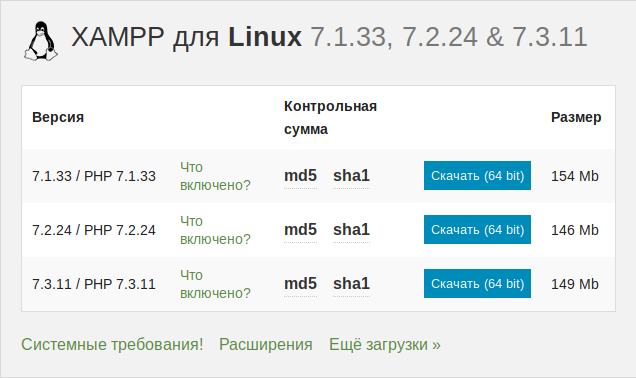
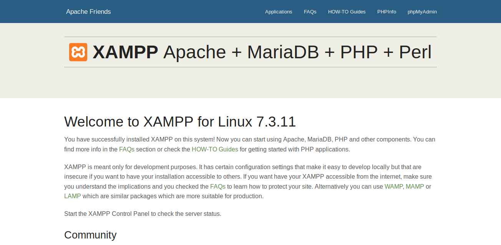
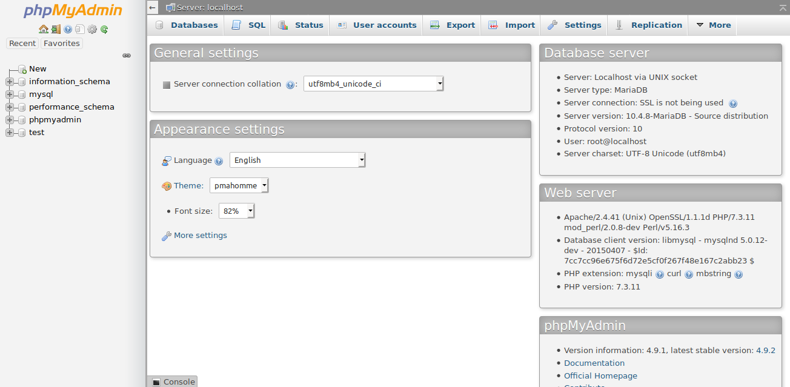

Как установить локальный сервер на Linux
Пошагово объясняем, как установить Xampp на Linux и настроить доступ для редактирования сайтов.
Поделиться
vlada_maestro / shutterstock
Под локальным сервером в веб-разработке обычно понимают набор ПО, которое позволяет запускать сайты на своём компьютере, реже — сам компьютер. Доступ к этим сайтам есть только на одном устройстве (потому-то он и локальный), но этого достаточно, чтобы программист мог всё протестировать.
Из этой статьи вы узнаете, как установить сервер на Linux.
Инструкция для ОС Windows.
Евгений Кучерявый
Пишет о программировании, в свободное время создает игры. Мечтает открыть свою студию и выпускать ламповые RPG.
Какой локальный сервер выбрать
На мой взгляд, лучший вариант — Lampp. Название этого локального сервера расшифровывается так:
Серьёзных альтернатив у Lampp нет. Это не критично, потому что у него есть большое сообщество, а обновления выходят регулярно. Из минусов можно отметить разве что отсутствие GUI (хотя для Linux это не недостаток).
Установка Lampp
Команды из этой статьи протестированы на Ubuntu 19.04, но для других дистрибутивов действия будут аналогичными.
Для начала нужно скачать установочный файл с официального сайта.

Актуальные версии на момент написания статьи
После завершения загрузки откройте терминал и перейдите в папку со скачанным файлом.
cd ~/Downloads
Затем измените режим доступа к файлу:
chmod 755 xampp-linux-*-installer.run
Вместо звёздочки нужно подставить версию файла и разрядность системы. Должно получиться так:
chmod 755 xampp-linux-x64-7.3.11-0-installer.run
Теперь установщик можно запустить:
sudo ./xampp-linux-*-installer.run
После завершения установки сервер будет находиться по адресу /opt/lampp.
Как запустить Lampp
Чтобы запустить Lampp, нужно ввести в терминале следующую команду:
sudo /opt/lampp/lampp start
Чтобы остановить:
sudo /opt/lampp/lampp stop
Чтобы проверить, что всё работает, перейдите по адресу http://localhost/. Вы должны увидеть вот такую страницу:

Чтобы не вводить полные команды для запуска и остановки сервера каждый раз, можно настроить алиасы. Для этого откройте файл .bashrc с помощью удобного редактора:
sudo gedit ~/.bashrc
Затем добавьте в конец файла следующее:
#aliases
alias lampp_start='sudo /opt/lampp/lampp start'
alias lampp_stop='sudo /opt/lampp/lampp stop'
После сохранения файла перезагрузите систему, и вы сможете управлять Lampp с помощью команд lampp_start и lampp_stop.
Как пользоваться Lampp
Файлы сайтов находятся по следующему адресу:
/opt/lampp/htdocs
Но редактировать их нельзя, потому что они установлены от имени суперпользователя. Чтобы это исправить, используйте следующую команду:
sudo chmod 777 /opt/lampp/htdocs
После этого можно создать в этой папке файл test.html и написать в нём «Hello, World!». Открыть его можно будет по адресу http://localhost/test.html.
Если вам нужно войти в phpmyadmin, то найти его можно по адресу http://localhost/phpmyadmin/.

Заключение
Сервер готов к работе, и его можно использовать, чтобы создавать сайты. Если вы в этом деле новичок, вам будет интересен курс «PHP-разработчик с нуля до PRO». Вы не только освоите все необходимые навыки, но и создадите несколько проектов, чтобы закрепить свои знания на практике.